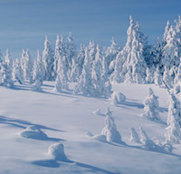

<!-- Modal -->
<div class="modal fade" id="aboutMetricsModal" tabindex="-1" role="dialog" aria-labelledby="myModalLabel" aria-hidden="true">
 <div class="modal-dialog modal-lg">
    <div class="modal-content">
        <!----------------------------->
        <!--     HEADER             -->
        <!----------------------------->
        <div class="modal-header">
		<button type="button" class="close" data-dismiss="modal"><span aria-hidden="true">&times;</span><span class="sr-only">Close</span></button>
		<h2 class="modal-title" id="myModalLabel" style="color:red">About Metrics</h2>
		<p>Drought can be measured in many different ways. 
		The metrics available on our web tool account for the following different flavors of drought: vegetation,snow,surface water,soil moisture,precipitation,evapotranspiration and water balance. </p>
        </div>
        <div class="modal-body">
		<!----------------------------->
                <!--    RAIN                 -->
                <!----------------------------->
                <div class="row">
                    <div class="col-md-8 img-portfolio">
                        <h3>Monitoring Precipitation's Effect on Drought</h3>
                        <h4>SPI</h4>
                        <p>The different forms of precipitation provide water to regions to fill streams and to water vegetation. 
                        Decreases in the amount of precipitation over a region can lead to a drought situation. The length of the      
                        precipitation deficit provides a measure of the duration of the drought, where droughts can be short term on the 
                        order of a weeks or long term on the order of years. The intensity of the drought can be measured using
                        the tradiational drought metric of the Standardized Precipitation Index(<b>SPI</b>). A PSI value near 0 represents
                        precipitation near normal, while positives/negatives represent precipitation amounts above/below normal. 
			PSI is approximately the number of standard deviations the precipitation amount 
			(accumulated over some time scale, i.e. 12-month, 24-month) is above the mean precipitation amount. 
			PSI values below -2 represent drought conditions. 
                        </p>
                    </div>
                    <div class="col-md-4 img-portfolio">
                         <!---->
                    </div>
                </div>
		<!----------------------------->
                <!--    VEGETATION            -->
                <!----------------------------->
                <div class="row">
                    <div class="col-md-8 img-portfolio">
			<h3>Monitoring Drought's Effect on Vegetation</h3>
			<h4>NDVI,EVI</h4>
			<p>The shortage of water available to vegetation in a drought limits the growth and productivity of vegetation. 
			This can be measured through the Normalized Difference Vegetation Index(<b>NDVI</b>) 
			and Enhanced Vegetation Index(<b>EVI</b>), which both measure the 'greenness' of the surface landscape.
			Both of these indices range from -1 to 1, with 1 representing a landscape that 
			has a reflectance typical of that of thriving vegetation and 0 representing browner landscapes. 
			We can monitor drought's effect on vegetation by looking at how the ground cover is changing, 
			reflected through changes (or anomalies) in these indices. 
			Positive anomalies in these indices represent vegetation growth, whereas negative anomalies represent vegetation decline.
			</p>
                    </div>
                    <div class="col-md-4 img-portfolio">
                         <!---->
                    </div>
                </div>
		 <!----------------------------->
                <!--    SOIL MOISTURE         -->
                <!----------------------------->
                <div class="row">
                    <div class="col-md-8 img-portfolio">
                        <h3>Monitoring Droughts's Effect on Soil Moisture</h3>
                        <h4>PDSI</h4>
                        <p>Soil moisture builds up from precipitation over many years and it is depleted through evapotranspiration 
			or use from vegetation. The lack of soil moisture is problematic for vegatation whose roots rely on soil moisture for growth. 
			Decreases in soil moisture can be an indicator of a drought situation. 
			The effects of drought on soil moisture can be monitored through the Palmer Drought Severity Index(<b>PDSI</b>), 
			which measures the departure of the moisture supply from normal and includes effects such as evapotranspiration, 
			soil recharge, runoff, and moisture loss from the surface layer. 
			A PDSI value between -.05 and 0.5 represents near normal soil moisture 
			conditions, with positive/negative values representing wet/dry conditions. 
			The magnitude of PDSI gives an indication as to the severity of the departure from normal conditions. 
			PDSI> 4 represents very wet conditions, while PDIS<-4 represents an extreme drought. 
			1<PDSI<2 represents slightly wet conditions, while -2<PDSI<-1 represents a mild drought. 
                        </p>
                    </div>
                    <div class="col-md-4 img-portfolio">
                         <!---->
                    </div>
                </div>
		<!----------------------------->
                <!--    EVAPOTRANSPIRATION     -->
                <!----------------------------->
		<!----------------------------->
                <!--    SNOW                 -->
                <!----------------------------->
                <div class="row">
                    <div class="col-md-8 img-portfolio">
                        <h3>Monitoring Snow's Effect on Drought</h3>
                        <h4>NDSI</h4>
                        <p>Snowpack in the mountains represent the water available to a region later in the year as the snow melts.
                        Many areas rely on these water sources for agriculture and municipal water needs.
                        Therefore, changes in the snow pack from year to year can be a cause of a drought situation, as these
                        needs are in shortage. The snowpack can be monitored through the Normalize Difference Snow Index(<b>NDSI</b>),
                        which measures the 'albedo' of the surface landscape. This index ranges from -1 to 1, with 1 representing a
                        landscape that has a reflectance typical of white snow. Changes(or anomalies) in NDSI indicate changes in the
                        snow cover for a region. Positive anomalies indicate increased snow cover, whereas negative anomalies indicate decreased
                        snow cover.
                        </p>
                    </div>
                    <div class="col-md-4 img-portfolio">
                         <!---->
                    </div>
                </div>
<!--
                <div class="row">
                    <div class="col-md-12 img-portfolio">
			  <li>Surface Water: NDWI</li>
			  <li>Precipitation: PPT,SPI</li>
			  <li>Evapotranspiration: PET,SPEI,EDDI</li>
			  <li>Water Balance: SPEI</li>
                    </div>
                </div>
-->
        	<!----------------------------->
       </div><!--modal-body-->
    </div><!--modal-content-->
  </div><!--modal-dialog-->
</div>
